| 日付 | 2020年8月2日（日） - 2020年8月6日（木） | ||||
|---|---|---|---|---|---|
| 山域 | 妙高周辺 | ||||
| メンバー | 家族（妻、長女・9歳、長男・7歳） | ||||
| 山行形態 | 子連れ4泊5日キャンプ | ||||
| アクセス | 車 | ||||
| ルート |
|
2日目
6時前に起床。すでに日は出ている。
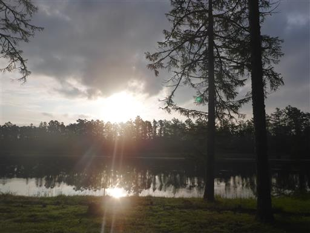
夜中にザックで羽化したセミ。
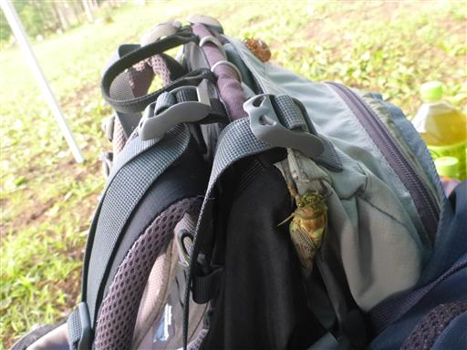
子供達は昨日、セミの幼虫を付けた木をチェックして回っている。
概ねうまく羽化しているようだ。
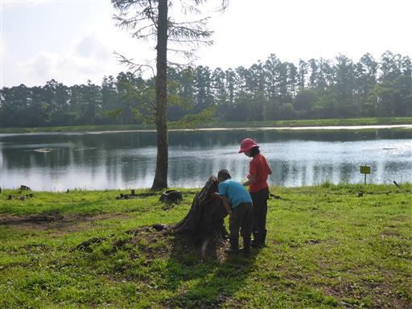
朝食後はキャンプ場内にある小天狗の森で遊ぶ。小さなアスレチック施設だ。
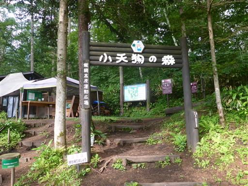
欠番はあるかもしれないが、全部で35のアスレチックが楽しめる。
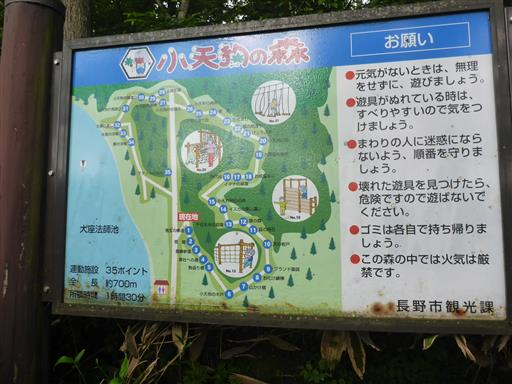
今日は息子が大はしゃぎで先頭を行く。
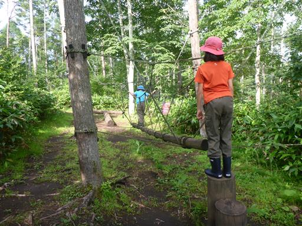
揺れる丸太。手を使わないで渡るにはバランス感覚が要求される。
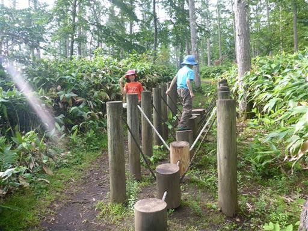
一番難しかったアスレチック。息子はクリア、娘はリタイア。
綱が細く握りにくいので、とにかく握力が要求される。
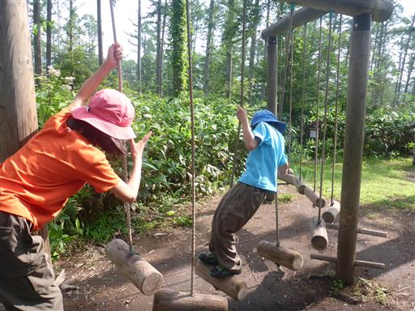
丸い球に座ってブランコ。

ロープ渡り。この辺りは楽勝。
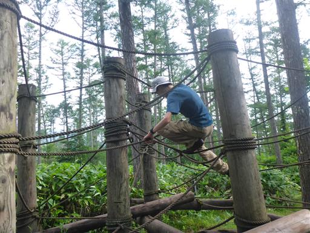
手足が長くないと攻略不可。息子は側面の壁に捕まって頑張っている。
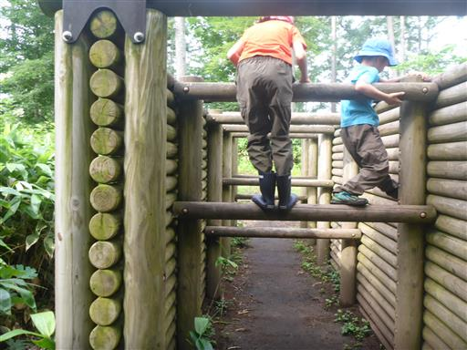
ネットトンネル。体の大きな大人には辛いアスレチックだ。
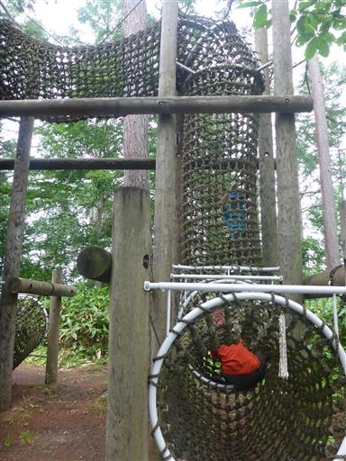
雲梯。息子はあと一歩のところで落下。雲梯が得意な娘も落下。
そこまで難しい雲梯ではなかったが、すでに握力が落ちてきているか…
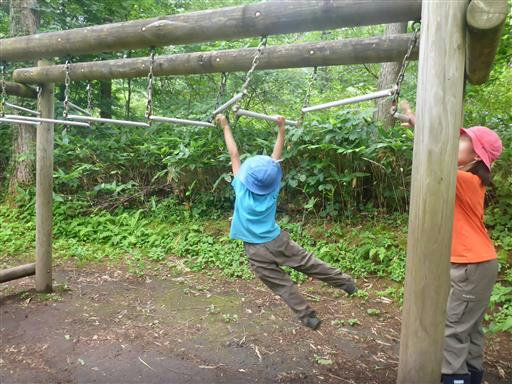
これは楽勝。壊れているアスレチックはほとんどなく、よく整備されている。
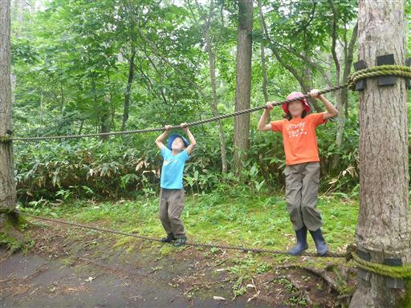
タイヤジャンプ。息子は昔苦手だったが、間隔の広いところも問題なく跳べるようになっている。
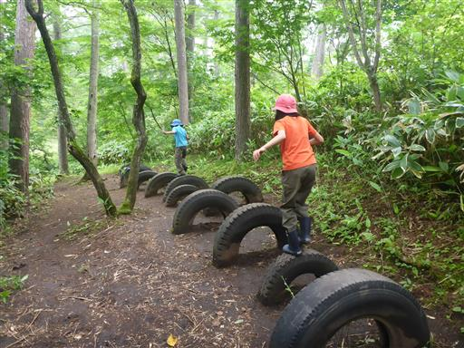
池の畔に出てくる。今日の飯縄山は雲の中だ。
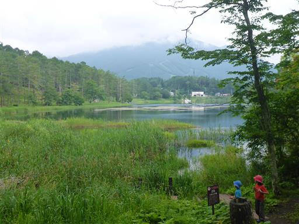
丸太の橋を渡る。
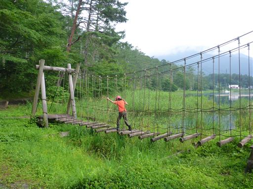
下は池なので少々恐怖感がある。
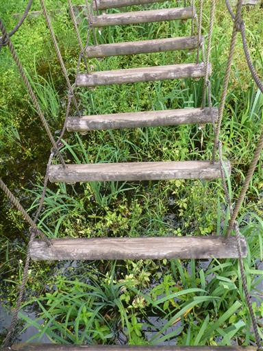
こちらはフォレストアドベンチャーの遊具で有料施設。
娘はずっと「やりたい」と言っていたが、小学4年生以上で息子ができないのと、
値段が3800円/人と高いので、今回の旅行ではパス。
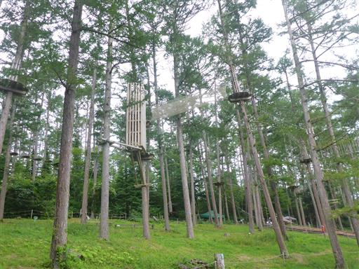
キキョウの花が咲いている。
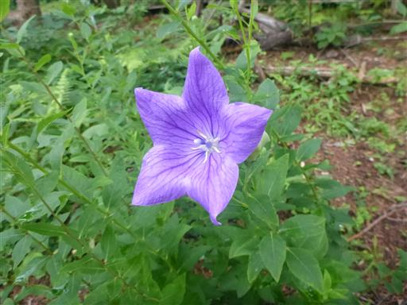
アスレチックを終えてテントサイトに戻る。
美しいイチモンジチョウが飛んでくる。

羽の裏も美しい。
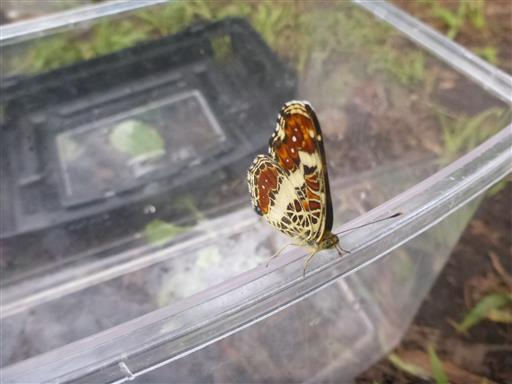
子供達はシーソーで遊び出す。シーソーは最近公園で見かけなくなった。
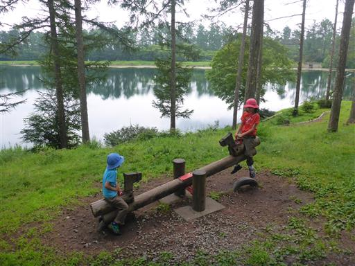
本日は山に登らず観光。まずは苗名滝を訪れる。
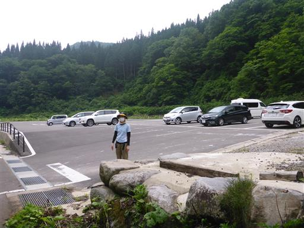
池に大量のニジマスがいる。
手をかざすと魚が逃げるので、息子が面白がって何度もやっている。
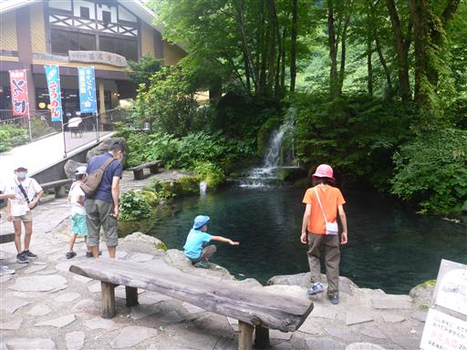
苗名滝までは遊歩道を10分ほど。立派な吊橋を渡る。
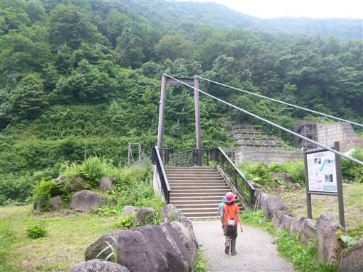
吊橋から見えるのは、これまた立派な砂防堰堤。
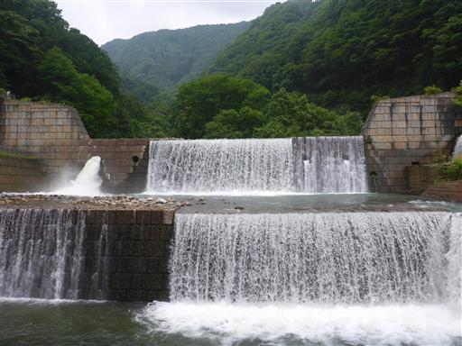
堰堤側の階段を登る。
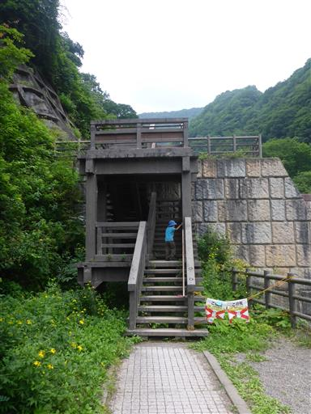
まるでダムのような巨大堰堤だ。
上から流れ落ちる水と、真ん中から吹き出ている水は何が違うのだろう？
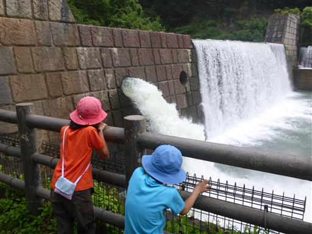
堰堤上流部。水の流れは激しい。
この本流にかかる滝なので、相当の水量の滝だろう。
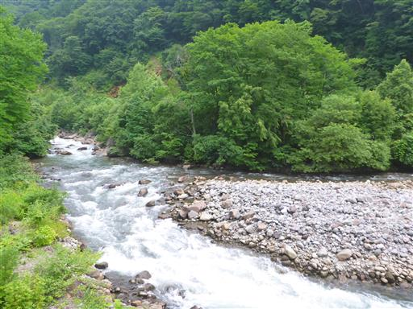
よく整備された遊歩道を先に進む。
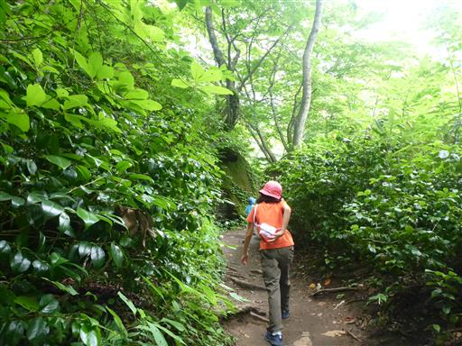
2つ目の吊橋を渡る。
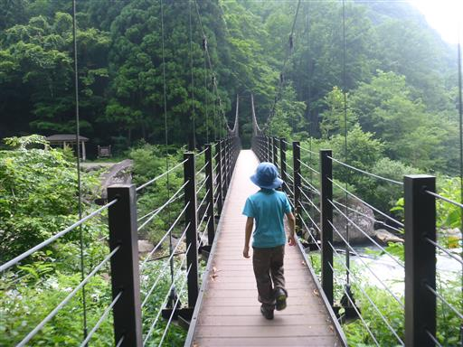
吊橋から苗名滝が見学できる。柱状節理の岩壁から流れ落ちる高さ55mの豪快な滝だ。
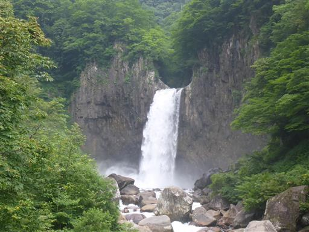
河原に下りて岩の上を移動するが、滝に近づくことはできない。
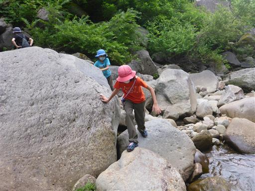
吊橋を渡る直前に、苗名滝方向に向かう道が延びていたので、そちらに向かってみる。
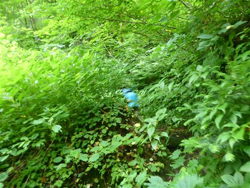
だいぶ近づいて滝壺まで見えたが、これ以上安全に滝に近づく道は見当たらない。
諦めて引き返すことにする。
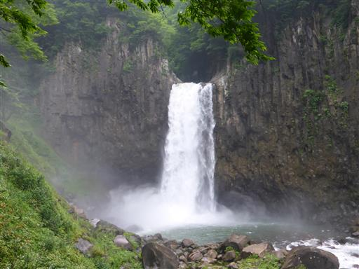
苗名滝近くの「たかさわ」という蕎麦屋で昼食をとる。信州と言えば蕎麦だ。
人気の店だが平日のため空いているのが有難い。
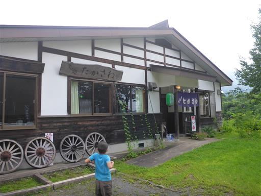
店の前のコスモス畑。目の前に聳える山は雲の中。
方向から推測すると妙高山だろうか？
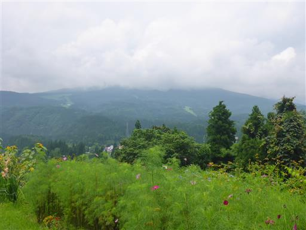
足元にアマガエルを発見。小さくて可愛い。
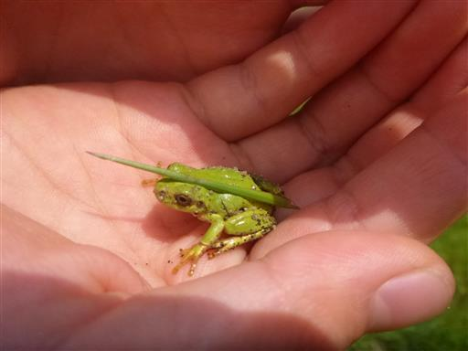
昼食後は野尻湖に行ってみる。まずは鯉の餌を購入。

とにかく巨大な鯉達。観光客から餌をもらい過ぎだ。
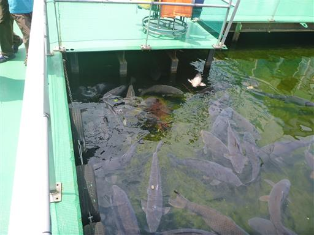
その後、何をするか検討。遊覧船には惹かれなかったが、遊覧船が向かう島に惹かれる。
聞くとアヒルボートで行けるという事なので、アヒルボートを選択。
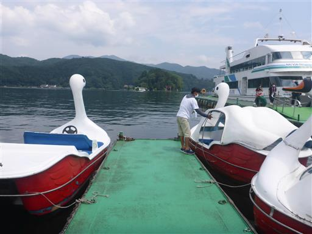
出発。

アヒルボートは水面が近い。目的地があるため一生懸命漕ぐ。
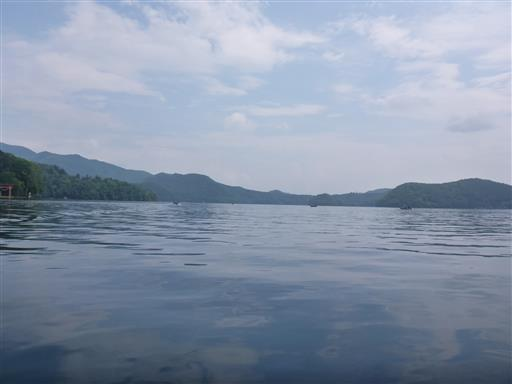
無事、弁天島に着岸。誰もいないので、自分で操縦して着岸し、ロープで固定する必要がある。
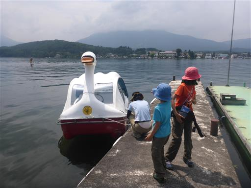
宇賀神社の立派な鳥居。
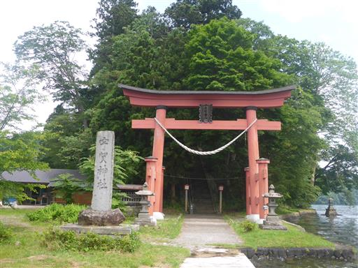
階段を登る。
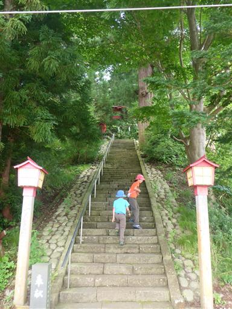
再び立派な鳥居を潜る。

周囲は杉の巨木が林立している。
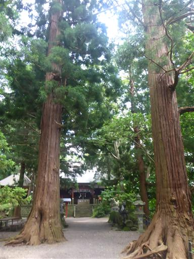
宇賀神社に到着。早速お参りする。
幸い遊覧船はこの時間に来ていないので、誰もおらず静かだ。
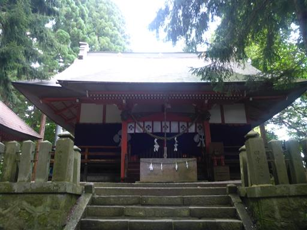
神社をぐるっと一周する。なかなか大きな神社だ。
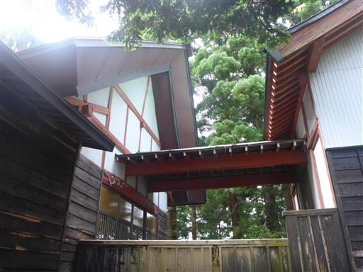
アヒルボートレンタルのタイムリミットは30分。往路10分、お参り10分、復路10分だ。
時間がないため、早々に切り上げてボートに向かう。

帰りは神社の境内から外れて湖岸の道路を歩く。
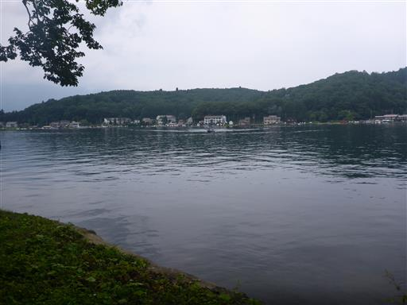
桟橋に到着。アヒルボートが増えている。手漕ぎボートの人もいる。
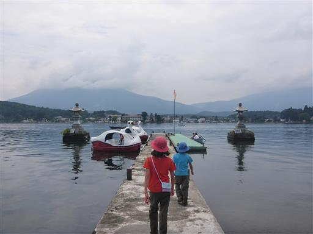
時間に遅れないよう、帰りも頑張って漕ぐ。ハンドルは子供達が握る。
右に左に、大はしゃぎだ。
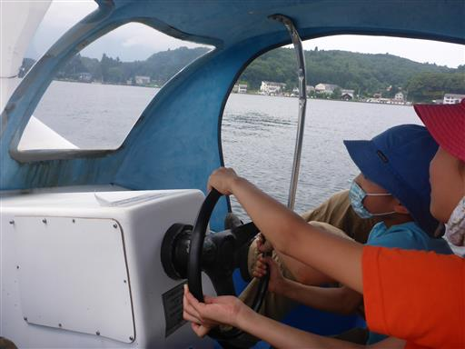
キャンプ場に戻ってくる。子供たちはセミの抜け殻で遊んでいる。
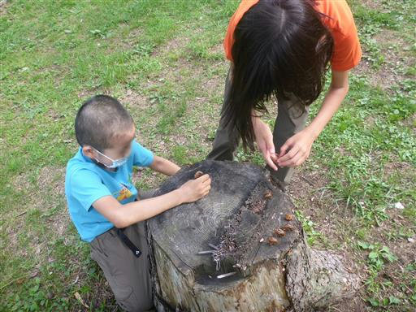
本日は街に買い出しにでかける。買い出し前に風呂に行こうとアルプス温泉に行くが、
何と月曜日は定休日で閉まっている。調査不足だった。
車を20分ほど走らせて若槻温泉に行くが、何と臨時休業。
電話をしても誰も出なかったので不思議に思っていたが、まさかの臨時休業とは…
近くに見晴の湯の看板が多く出ていたので、行ってみる。
ネットで見つからなかったので不審に思いつつ行ってみると、すでに廃業している。
廃業したなら看板は撤去して欲しい。風呂難民になってしまった。
本日の風呂は諦めて西友で買い物をする。
キャンプ場に戻ってくる。
コインランドリーで洗濯。キャンプ場に洗濯機は無いが、向かいにコインランドリーがあるのは助かる。
最後がせわしない一日になってしまった。明日の登山に備えて早めに寝る。